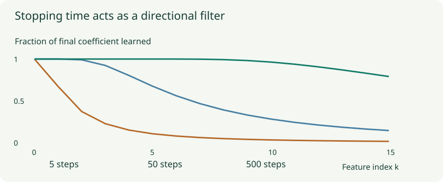

Early Stopping and Implicit Regularization: The Path Matters
Derive gradient descent’s spectral filter $1-(1-\eta s)^t$, compare it with L2 ridge regression’s $s/(s+\lambda)$ filter, and connect early stopping to implicit optimization bias.
Even without an explicit penalty in the loss, the optimization path regularizes the model: gradient descent fits large-eigenvalue signal directions quickly while learning small-eigenvalue noise directions slowly. Stopping at step $t$ suppresses those noisy directions in a way closely analogous to L2 ridge regression with $\lambda\approx\frac{1}{\eta t}$.
1. Stopping step vs. best validation checkpoint
Suppose validation losses evaluated at five checkpoints are $(0.42,0.31,0.28,0.29,0.30)$. With patience $P=2$, training halts at check $5$ (two consecutive checks without beating $0.28$), but the deployed model must restore the weights saved at check $3$ ($0.28$), not the overfitted weights at check $5$.
2. Derive gradient descent’s spectral filter
Consider linear least squares $L(w)=\frac{1}{2N}\|Xw-y\|_2^2$ starting from $w_0=0$. Let $H=\frac1N X^\top X$ and $b=\frac1N X^\top y$, so the exact unregularized optimum satisfies $Hw^*=b$ and gradient descent updates
Along an eigenvector of $H$ with eigenvalue $s>0$, subtract $w^*$ from both sides of the scalar coordinate recurrence:
Since $w_0=0$, solving for $w_t$ yields the early-stopping spectral filter:
When $0<\eta s\le 1$, high-curvature directions (large $s$) converge rapidly toward $w^*$, while flat directions (small $s$, which amplify observation noise by $1/s$) stay near zero:
- For $\eta=0.5$ and $t=10$ steps, a direction with $s=1$ has learned $1-(1-0.5)^{10}\approx 99.9\%$ of $w^*$.
- At the same step $t=10$, a flat direction with $s=0.02$ has learned only $1-(1-0.01)^{10}\approx 9.6\%$ of $w^*$.

3. Compare with L2 ridge regression ($\lambda\leftrightarrow\frac{1}{\eta t}$)
Adding $\frac\lambda2\|w\|_2^2$ to the least-squares loss gives $(H+\lambda I)w_{\rm ridge}=b=Hw^*$. Along eigenvalue $s$, compare the two shrinkage filters:
Both filters equal $\approx 1$ when $s$ is large and $\approx 0$ when $s\to 0$. Matching their small-$s$ slopes ($s/\lambda\approx\eta t s$) gives the classical correspondence between training time and L2 strength:
If $w_0\ne 0$, the exact recurrence is $w_t=(1-\eta s)^tw_0+[1-(1-\eta s)^t]w^*$, so any nullspace component ($s=0$) retains its initial value $w_0$ permanently unless explicit weight decay is used.
4. Lab: fit noisy observations along the training trajectory
Training path and validation-selected checkpoint
The target is $\cos(\pi x)+0.3\cos(2\pi x)$ on $[0,1]$. There are 32 training observations and 80 separate validation observations, each with seeded Gaussian noise. The linear model has 16 cosine features, scaled by $1/(k+1)$ for $k=0,\ldots,15$. Starting at zero, full-batch gradient descent uses learning rate $0.8$.
5. Implicit bias and weight averaging (EMA / SWA)
- Implicit bias of gradient descent: On linearly separable data with logistic/cross-entropy loss, Soudry et al. (2018) proved that as $t\to\infty$, $\|w_t\|_2\to\infty$ while the normalized direction $w_t/\|w_t\|_2$ converges to the hard-margin $L_2$ SVM solution—without any explicit regularizer.
- Trajectory weight averaging (EMA & SWA): Maintaining an exponential moving average $\bar w_t=\beta\bar w_{t-1}+(1-\beta)w_t$ (or averaging late checkpoints in Stochastic Weight Averaging) cancels stochastic oscillations along the rim of a valley and lands closer to the center of a flat basin (update BatchNorm running statistics on $\bar w$ before evaluation).
6. Questions worth answering
Along eigenvalue $s$, gradient descent from $w_0=0$ scales the unregularized coordinate by $1-(1-\eta s)^t\approx\eta ts$ for small $s$, matching the small-$s$ behavior of the ridge filter $s/(s+\lambda)\approx s/\lambda$ when $\lambda=1/(\eta t)$.
Because a neural network $f(x;w)$ is nonlinear in $w$, so $f\bigl(x;\frac1K\sum_k w^{(k)}\bigr)\ne\frac1K\sum_k f(x;w^{(k)})$. Weight averaging requires only a single forward pass at inference time.
Sources
Yao, Rosasco, and Caponnetto, On Early Stopping in Gradient Descent Learning; Soudry et al., The Implicit Bias of Gradient Descent on Separable Data; Izmailov et al., Averaging Weights Leads to Wider Optima and Better Generalization.